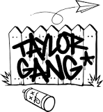

About Us
Taylor Gang Ent. is an American entertainment company. It operates as an independent record label, music management, music production and film company based in Pittsburgh, Pennsylvania founded by rapper Wiz Khalifa. The record label is home to artists such as Wiz Khalifa, Berner, Project Pat, Ty Dolla $ign, Tuki Carter, J.R. Donato, and Raw Boo Man Academy Award winner and Three 6 Mafia member Juicy J who serves as A&R for the label. The production side of the company is home to Sledgren, Ricky P, Cozmo & TM88.
The Taylor Gang was originally coined in 2006 to refer to "Taylor's" who are supporters of Wiz Khalifa. Taylor Gang Ent. was founded in 2008 by Khalifa. The record label was named after Khalifa's alma mater, Taylor Allderdice High School, and his affinity for Converse Chuck Taylor All-Star sneakers. Taylor Gang Ent. began as Khalifa's fan base network, street team and home to his crew. The entity later became a full entertainment company encompassing record label, management services, production & film companies. Chevy Woods, Berner, and Tuki Carter all signed to the record label in 2011. In December 2012, Juicy J joined the entertainment company. In 2013, Ty Dolla $ign joined the company as well. In 2014, J.R. Donato signed to the label. King Ken & Kmatic KelZ signed to the label in early 2016. The record label also doubles as a super group and announced plans to release an album as a group in 2016. Taylor Gang Ent. partnered with brands to create licensing deals, most notably, Grenco Science in 2014 for a series of vaporizer products and Neff to produce a special 26-piece apparel collection composed of T-shirts, jerseys and hats, which were a creative collaboration among the label's artists and Neff. The label signed a distribution deal with Atlantic Records although some artists on the label are still distributed by EMPIRE.